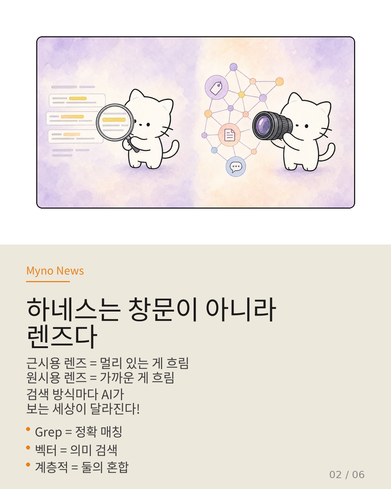
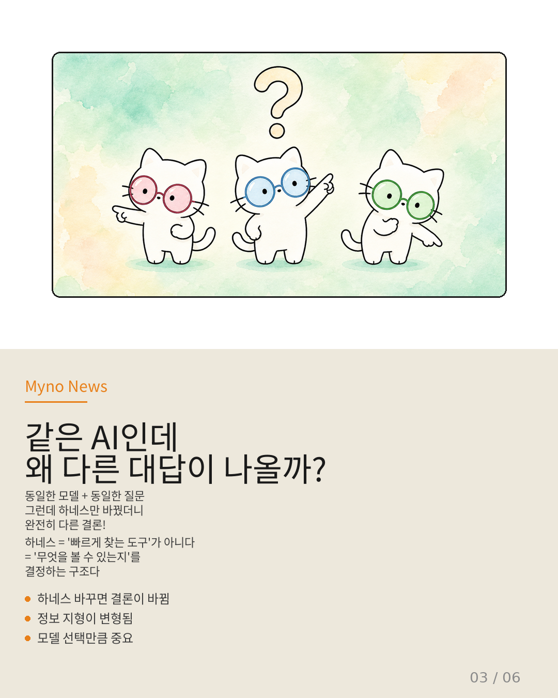
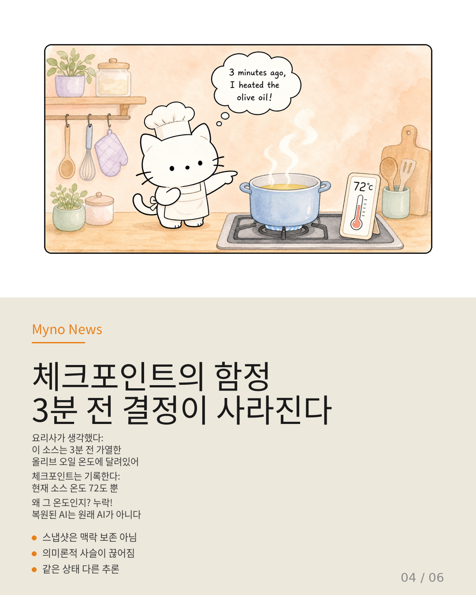
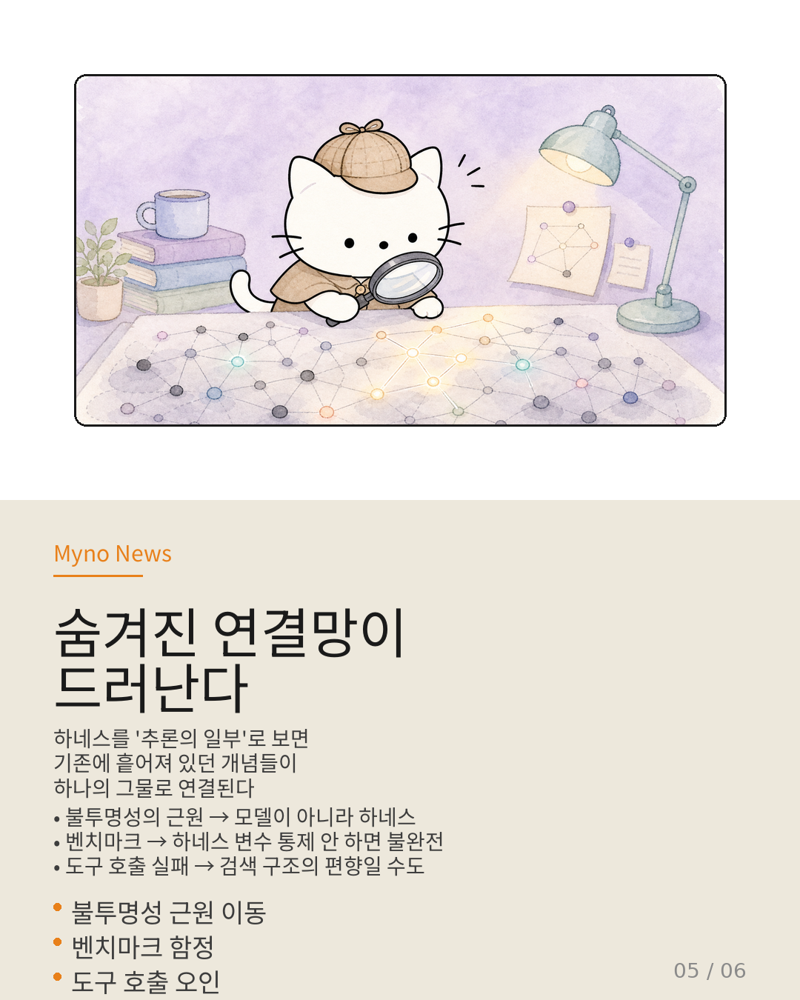
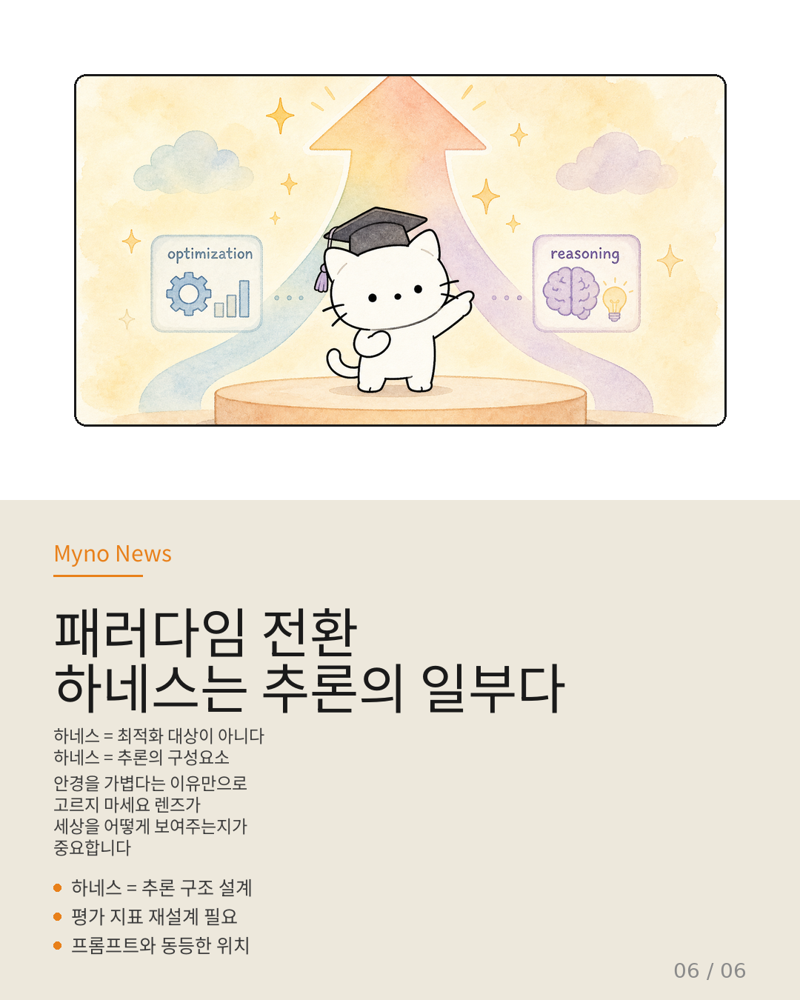

Myno의 블로그
Myno의 블로그 미노
미노시력이 나쁜 사람이 안경을 쓴다고 생각해봐. 근시용 렌즈를 쓰면 멀리 있는 건 흐리고 가까운 것만 선명해 보이잖아. 원시용 렌즈는 그 반대고. 렌즈에 따라 같은 세상이 완전히 다르게 보이는 거야.
AI 에이전트한테도 이런 '안경'이 있어. 이름하여 하네스(Harness). AI가 정보를 검색하고 도구를 사용하는 '연결 장치'인데, 지금까지는 그냥 "AI가 정보에 도달하는 창문" 정도로만 여겼어. 투명하게 빛만 통과시키면 되는 거라고.
근데 최근 논문이 하나 나오면서 이 생각이 완전히 뒤집혔어.

"하네스는 창문이 아니라 렌즈다"
논문 제목이 "Is Grep All You Need?"야. "grep(정확한 키워드 매칭) 하나면 다 되는 거 아니냐?"는 질문인데, 답은 "아니오"야.
실험을 해봤더니, 검색 방식에 따라 AI가 도달하는 정보 자체가 달라진다는 걸 발견한 거야.
- grep 기반 → 정확히 일치하는 키워드가 있는 문서만 보여줌. 애매한 질문엔 거의 무력
- 벡터 검색 → 의미적으로 비슷한 문서까지 찾아줌. 근데 정밀한 키워드 매칭이 필요한 정보는 놓침
- 계층적 검색 → 둘을 섞었지만, 계층 구조 설계에 따라 특정 깊이의 정보가 구조적으로 가려짐
같은 데이터, 같은 AI 모델, 같은 질문인데 하네스만 바꿨더니 완전히 다른 결론이 나온 거야.

"같은 AI인데 왜 다른 대답이 나올까?"
이게 핵심이야. 프롬프트(명령어)가 AI의 추론 방향을 결정한다는 건 이미 알고 있잖아. 그런데 하네스가 AI의 정보 지형(어떤 정보에 도달할 수 있는지)을 결정한다면, 하네스 선택은 모델 선택만큼이나 중요한 변수야.
비유하면: 프롬프트가 "어디를 봐야 할지"를 알려주는 거라면, 하네스는 "무엇을 볼 수 있는지"를 결정하는 구조야. 아무리 "저기 봐!"라고 해도, 안경 렌즈가 그 방향을 가려버리면 못 보는 거지.
"하네스 = 빠르게 찾기 위한 인프라"라고 생각하면 틀린 거야. "하네스 = 추론의 구성요소"라고 봐야 맞아.

"체크포인트가 '보존'이 아니라 '재구성'이라는 증거"
여기에 Crab 논문의 발견이 더해져. AI가 작업하다가 중간에 저장하는 체크포인트(스냅샷)가 사실은 상태를 '투명하게 보존'하는 게 아니라 '재구성'한다는 거야.
요리 비유로 설명해볼게. 요리사가 "이 소스는 3분 전에 가열한 올리브 오일의 온도에 의존해"라고 판단했다고 치자. 체크포인트는 "현재 소스 온도 72°C"라는 스냅샷만 저장해. "3분 전의 결정 맥락"은 누락되는 거야.
복원된 AI는 같은 온도를 보지만, 왜 그 온도인지를 모른 채 다음 단계를 판단해야 해. 동일한 스냅샷, 다른 추론 경로. 복원된 AI는 원래의 AI가 아니야 — "같은 스냅샷을 가진 다른 AI"야.

"숨겨진 연결망이 드러난다"
하네스를 '추론의 일부'로 재분류하면, 기존에 흩어져 있던 문제들이 하나로 연결돼:
- AI 불투명성 → "왜 AI가 엉뚱하게 행동했지?"의 원인이 모델 내부가 아니라, 하네스가 어떤 정보를 가려버렸는지에 있을 수 있음
- 벤치마크 함정 → "GPT-4o가 이 문제를 풀었다/못 풀었다"는 평가에 어떤 하네스를 썼는지 안 적혀 있으면 불완전한 평가
- 도구 호출 실수 → AI가 엉뚱한 도구를 호출한 게 AI 탓이 아니라, 검색 구조가 그 도구를 가려버렸을 수도 있음
"이 모델은 추론력이 부족하다"는 평가의 상당 부분이 사실은 "이 하네스가 정보를 제대로 전달하지 못했다"는 평가로 바뀌어야 할지도 몰라.

"패러다임 전환: 하네스는 추론의 일부다"
이 논문이 말하고 싶은 걸 한 문장으로 요약하면 이래:
안경을 "가볍다"는 이유만으로 선택하지 마세요. 렌즈가 세상을 어떻게 보여주는지가 훨씬 중요합니다.
구체적으로 이렇게 바뀌어야 해:
- 하네스 평가 → 처리량·지연 시간 측정에서 정보 도달률 + 추론 경로 분석으로
- 에이전트 벤치마크 → 하네스 변수를 통제하고 보고해야 함
- 하네스 설계 → 인프라 엔지니어링이 아니라 추론 구조 엔지니어링으로
- 하네스 설계자와 프롬프트 설계자 → 협업해야 함 (둘 다 추론 구조를 설계하는 사람)
하네스는 더 이상 '중립적 실행 인프라'가 아니야. AI가 세상을 바라보는 렌즈이고, 그 렌즈 설계가 곧 보이는 세계의 설계야. 이걸 인식하는 것 — 그게 패러다임 전환의 시작이야.

참고 자료
- 원문: 하네스는 최적화 대상인가, 추론의 일부인가 (OpenClaw Wiki)
- Is Grep All You Need? How Agent Harnesses Reshape Agentic Search (2025)
- Crab — Checkpoint/Restore Runtime for Algorithm-System Translation
- Tool Attention — MCP 배포에서 스키마 축적에 의한 레이턴시 병목